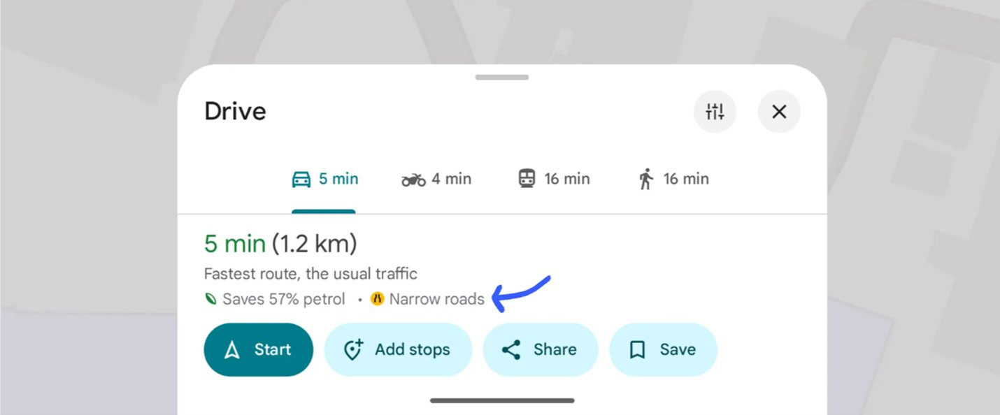
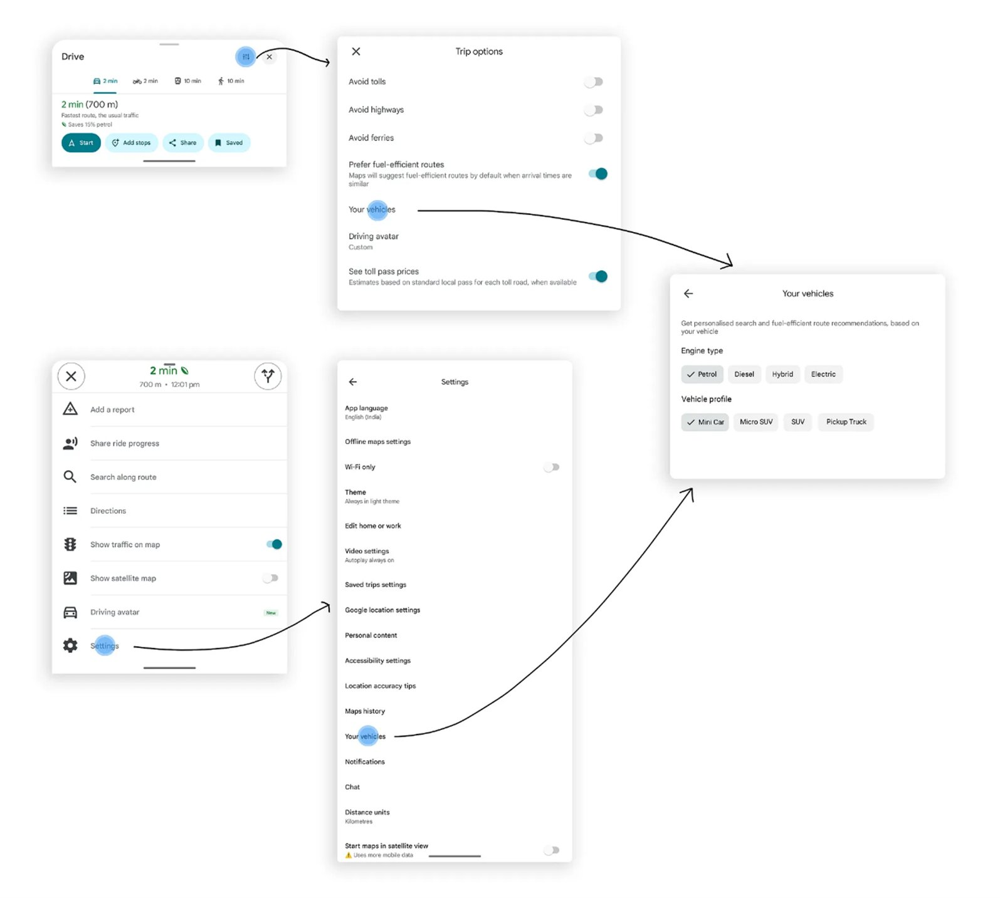
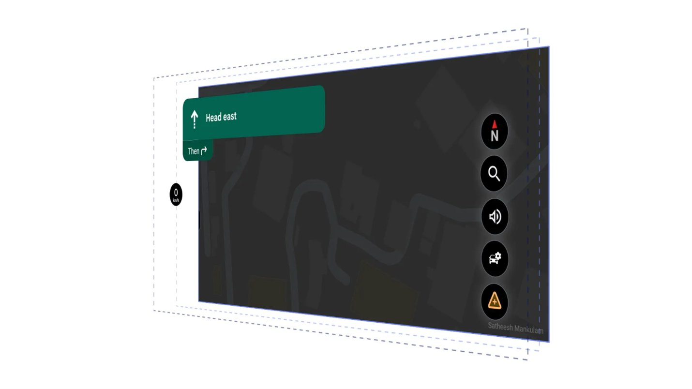
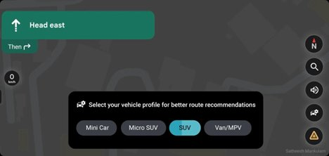
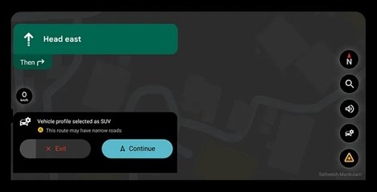
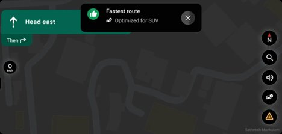

I was driving my Tata Safari through a local area with narrow, winding roads. The paths were often broken by sharp turns, uneven speed breakers, and shortcuts better suited for smaller vehicles than SUVs.
While using Google Maps, I noticed the suggested route was nearly impossible for my vehicle, leading me into lanes too tight for a SUV to go. I eventually had to reverse, find an alternate path, and lost valuable time in the process.
The mobile version of Google Maps displays route suggestions and warns about narrow roads below the time and distance details before starting a trip. However, this information is not easily noticeable when users are in a hurry.

Google Maps does warn about narrow roads — but the warning is easy to miss when you're in a hurry. The blue arrow shows where it appears.
"What if Google Maps knew I was driving a Safari?" — It could avoid tight residential lanes, suggest wider main roads, even if they are a few minutes longer.
The Proposed Experience
Imagine opening Google Maps and setting your vehicle profile: Tata Safari (SUV).
The app instantly adjusts:
- Prefers main roads and bypasses.
- Warns about steep ramps and narrow lanes ahead.
- Still allows colony roads if they are SUV-compatible.
Now, my journey across the local area feels smooth. I reach on time, stress-free, and without the embarrassment of getting stuck in a small street.

Google Maps already has "Your vehicles" in Settings — showing engine type and vehicle profile (Mini Car, Micro SUV, SUV, Pickup Truck). The data infrastructure exists.
Competitive Analysis
| App | Vehicle Awareness | Consumer Profile |
|---|---|---|
| Google Maps | Two-wheeler mode, EV routing | Partial |
| HERE Maps | Truck profiles (height/width restrictions) | Commercial only |
| Mappls | Truck profiles (height/width restrictions) | Commercial only |
| Proposed | Consumer SUV / small car profiles | Consumer-friendly |
No consumer-friendly SUV/small-car profile exists yet. That's the gap.
Android Auto — The Design Proposal
For Android Auto, vehicle profiles become even more powerful — visible on the dashboard, selectable before starting a trip, and confirmable with a single tap.

The Android Auto interface — a vehicle profile icon lives in the right panel alongside navigation controls

Profile selection with glanceable chips and auto timeout

Confirmation with road warning + Exit/Continue — no decision fatigue while driving

"Optimized for SUV" — a confirmation bubble that closes the loop. The route is personalised, and the driver knows it.
Android Auto — Feature Highlights
Prototype
Watch the full interactive prototype of the Android Auto vehicle profile experience:
Android Auto Vehicle Profile Prototype
Interactive prototype demonstrating the full vehicle profile selection flow on Android Auto.
Watch on Vimeo ↗Feasibility
This isn't a greenfield build — Google already has all the infrastructure needed:
Google already has
- Rich road graph + width/height restrictions data
- Two-wheeler mode (separate routing graph already exists)
- EV routing details (vehicle-aware routing precedent)
- "Your vehicles" setting (engine type + profile already in Maps Settings)
- Crowd-sourced road data via Waze and Maps contributions
The vehicle profiles just need to be surfaced at the right moment — not buried in Settings, but active during navigation, exactly when the user needs it.